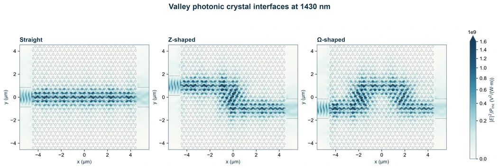
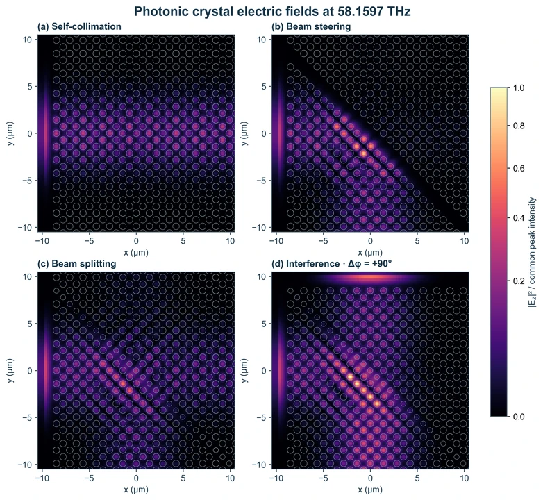

 Dispersion & FDTDValley photonic crystal waveguideComparing straight, Z-shaped, and Ω-shaped interfaces.
 2D FDTDPhotonic crystal beam steering and splittingChanging the output with a line defect or input phase.